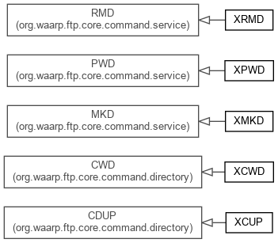

JavaScript is disabled on your browser.
Overview
Package
Class
Use
Tree
Deprecated
Index
Help
Prev Package
Next Package
Frames
No Frames
All Classes
Package org.waarp.ftp.core.command.rfc775
FTP RFC 775 related command
See:
Description

Class Summary
Class
Description
XCUP
XCUP command
XCWD
XCWD command
XMKD
XMKD command
XPWD
XPWD command
XRMD
XRMD command
Package org.waarp.ftp.core.command.rfc775 Description
FTP RFC 775 related command
Overview
Package
Class
Use
Tree
Deprecated
Index
Help
Prev Package
Next Package
Frames
No Frames
All Classes
Copyright © 2009–2014
Waarp
. All rights reserved.